All 50 enemies use the top-left FRONT panel of their approved geometric reference. Original RGB pixels are unchanged; only transparency and fully transparent margins change. Lord Bernhard uses the approved crimson reference. The historical 136 portraits and 0.4.2 crimson cutout remain unchanged.
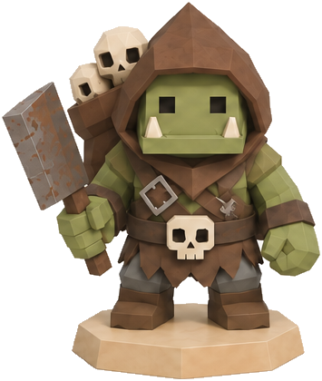
Orc Skull Scavengershost_01 · FRONT · 355 × 420
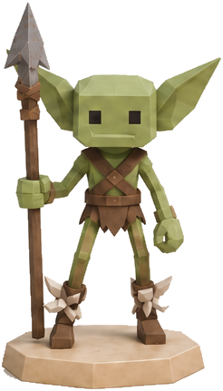
Goblin Thornstridershost_02 · FRONT · 246 × 431
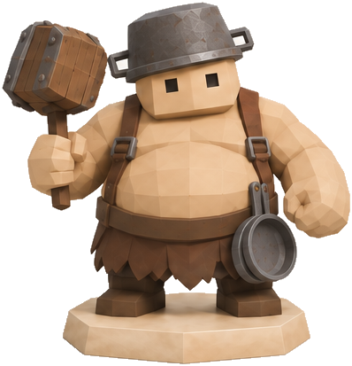
Ogre Gluttonshost_03 · FRONT · 398 × 413
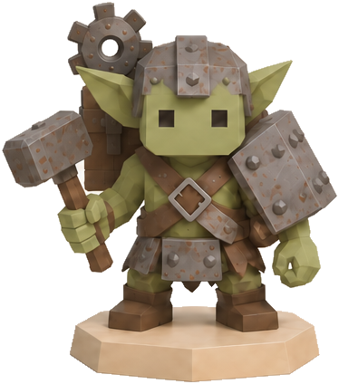
Orc Scrap Tinkershost_04 · FRONT · 374 × 424
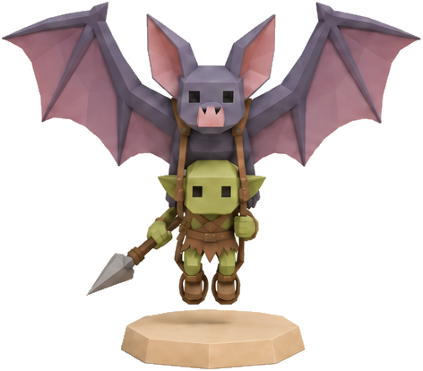
Bat Scoutshost_05 · FRONT · 472 × 414
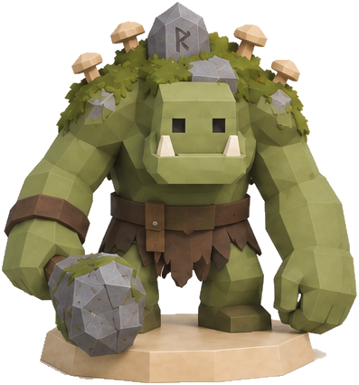
Mossback Trollshost_06 · FRONT · 397 × 425
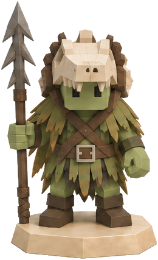
Marsh Orc Huntershost_07 · FRONT · 260 × 427
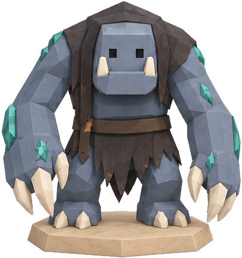
Shadowblood Trollshost_08 · FRONT · 405 × 432
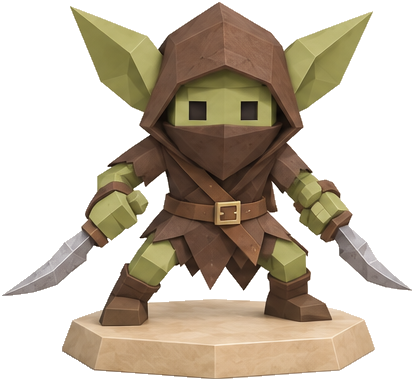
Goblin Dust Dancershost_09 · FRONT · 414 × 381
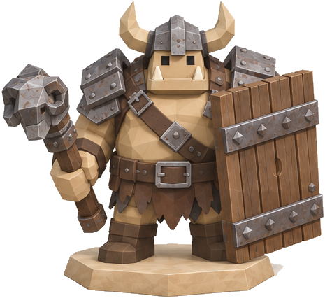
Mogrok, the Gatebreakerhost_10 · FRONT · 465 × 426
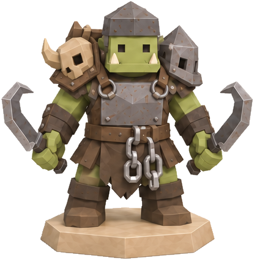
Orc Hookbearershost_11 · FRONT · 415 × 424
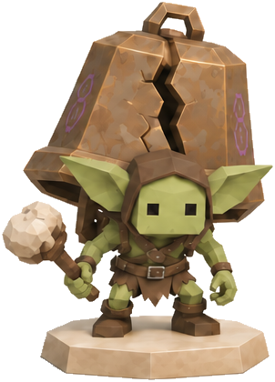
Goblin Bell Devourershost_12 · FRONT · 302 × 420
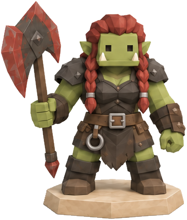
Red Tusk Orc Huntresseshost_13 · FRONT · 364 × 428
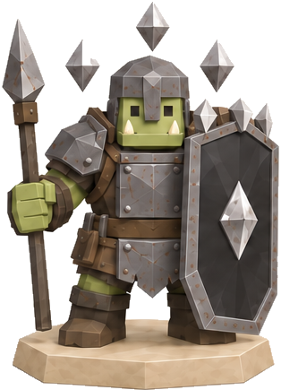
Orc Mirror Shieldbearershost_14 · FRONT · 314 × 435
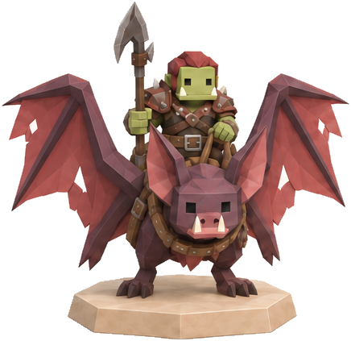
Blood Bat Ridershost_15 · FRONT · 436 × 423
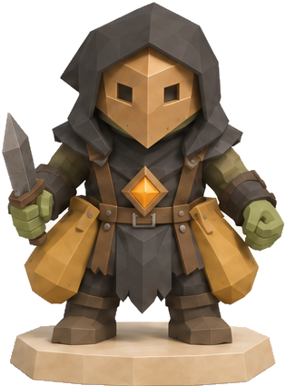
Orc Ash Pickpocketshost_16 · FRONT · 315 × 425
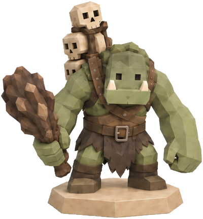
Cursed Totem Trollshost_17 · FRONT · 400 × 432
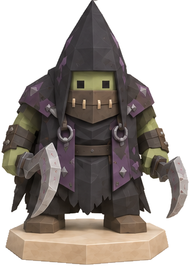
Silent Orc Executionershost_18 · FRONT · 311 × 436
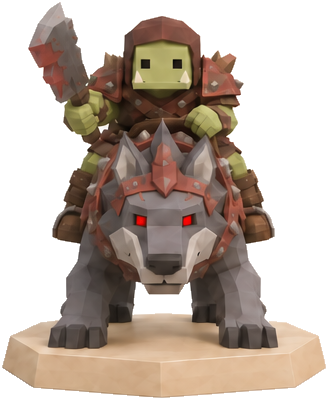
Bloodwolf Orc Ridershost_19 · FRONT · 328 × 400
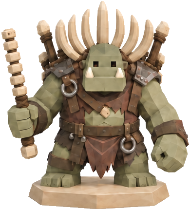
Gorvash, the Bone Patriarchhost_20 · FRONT · 390 × 431
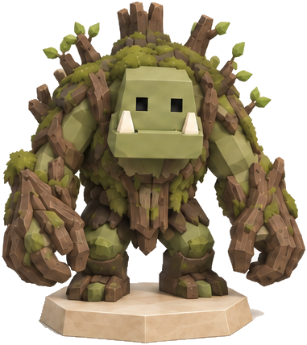
Rotroot Trollshost_21 · FRONT · 381 × 429
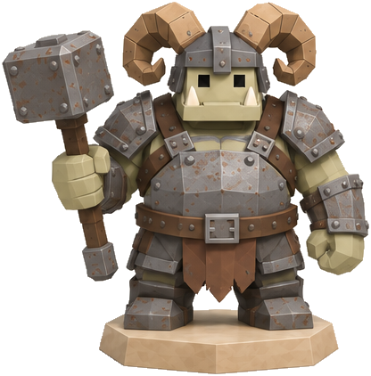
Iron Ram Ogreshost_22 · FRONT · 416 × 422
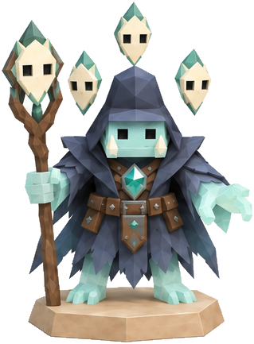
Shard-Soul Orc Warlockshost_23 · FRONT · 319 × 433
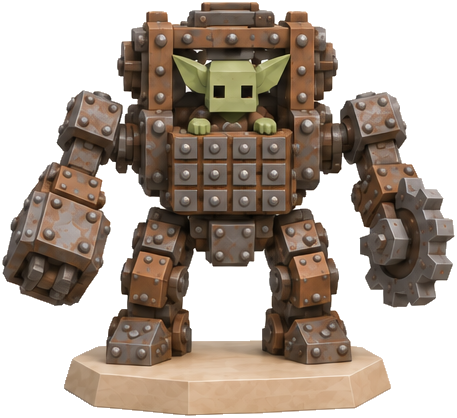
Riveted Goblin Mutantshost_24 · FRONT · 457 × 418
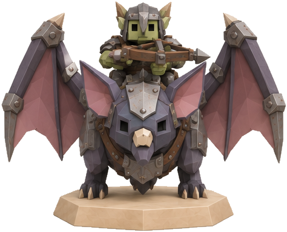
Iron Bat Orc Ridershost_25 · FRONT · 474 × 383
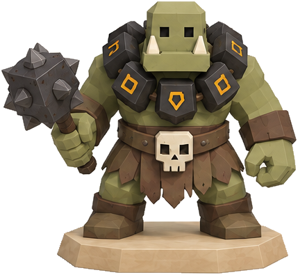
Orc Spell Eatershost_26 · FRONT · 429 × 395
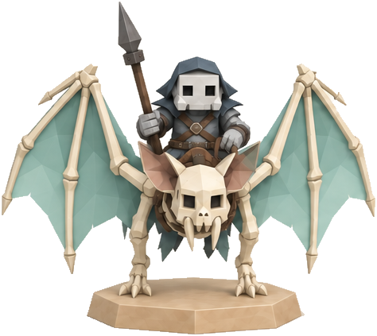
Spectral Bat Ridershost_27 · FRONT · 474 × 423
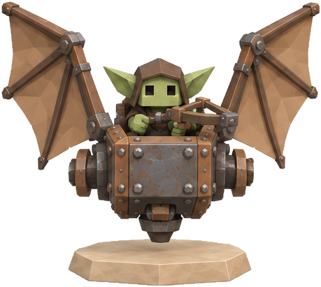
Goblin Scrapwingshost_28 · FRONT · 459 × 411
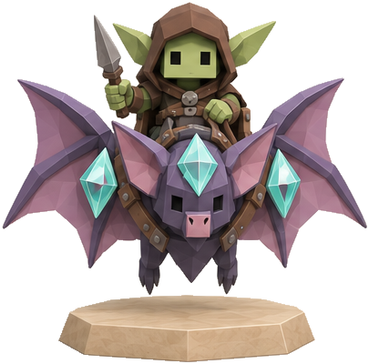
Prismatic Bat Trickstershost_29 · FRONT · 405 × 400
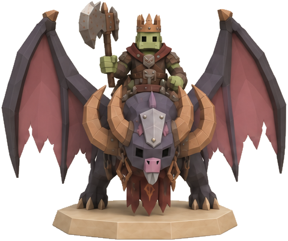
Zaruun, Lord of Storm Wingshost_30 · FRONT · 479 × 401
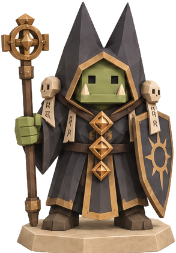
Orc Dual-Seal Inquisitorshost_31 · FRONT · 293 × 422
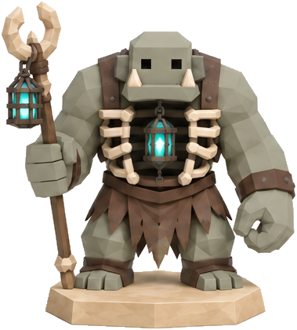
Soul-Drinker Trollshost_32 · FRONT · 379 × 420
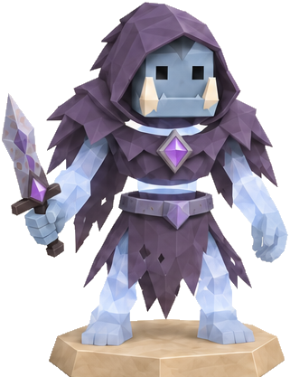
Orc Wraiths of the Shattered Worldhost_33 · FRONT · 321 × 417
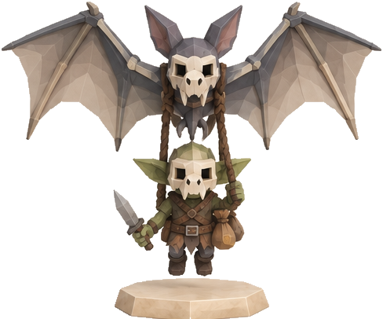
Goblin Gallows Fliershost_34 · FRONT · 488 × 406
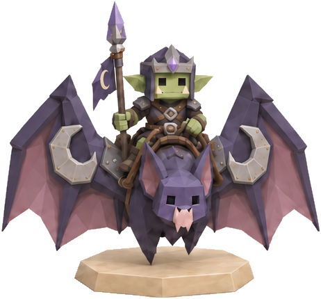
Eclipse Bat Guardhost_35 · FRONT · 462 × 430
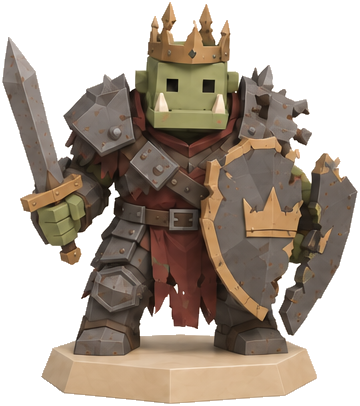
Orc Oathbreakershost_36 · FRONT · 360 × 406
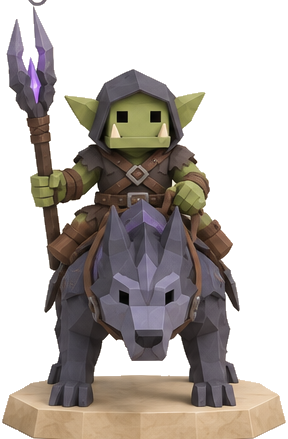
Riftwolf Orc Ridershost_37 · FRONT · 288 × 439
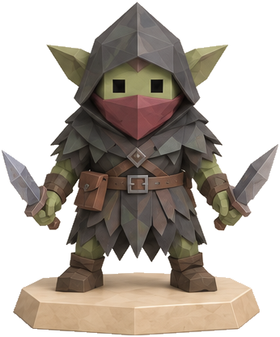
Black Marsh Knifemen / Blood-Leech Trollshost_38 · FRONT · 346 × 416
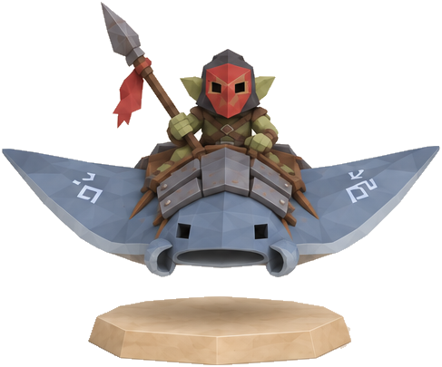
Thunder Manta Orc Ridershost_39 · FRONT · 487 × 405
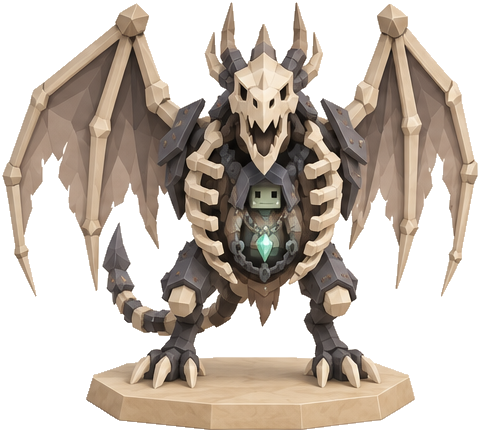
Vorlak, the Hollow Sky Kinghost_40 · FRONT · 480 × 430
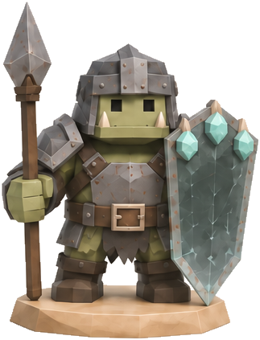
Orc Crystal Phalanxhost_41 · FRONT · 323 × 423
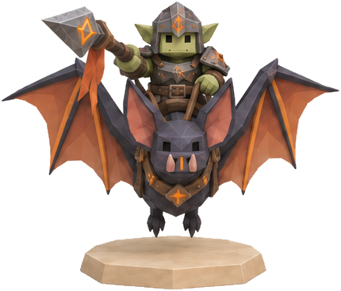
Fire Bat Orc Lancershost_42 · FRONT · 430 × 367
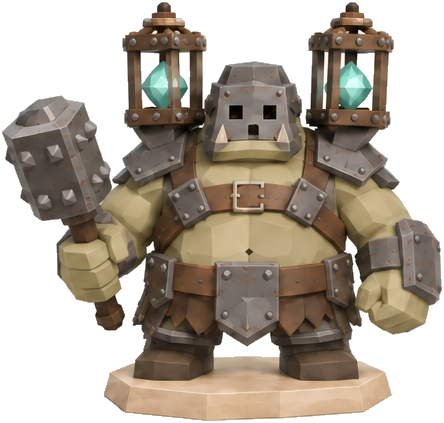
Ogres of the Imprisoned Soulshost_43 · FRONT · 444 × 423
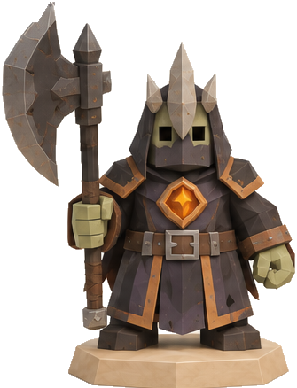
Orc Ash Executionershost_44 · FRONT · 335 × 438
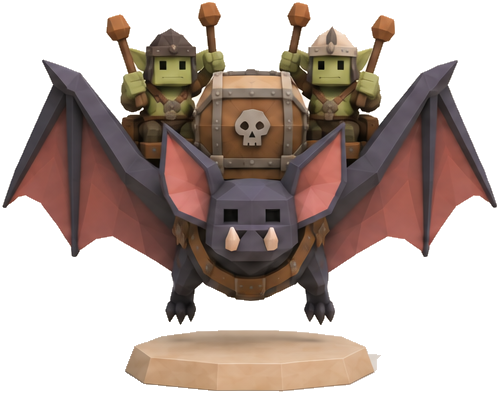
Flying Drummers of the Black Hordehost_45 · FRONT · 499 × 394
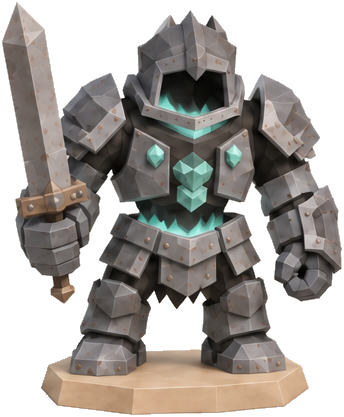
Ogre Revenants in Hollow Armorhost_46 · FRONT · 344 × 417
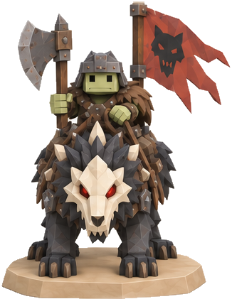
Orc Riders of the Last Howlhost_47 · FRONT · 326 × 421
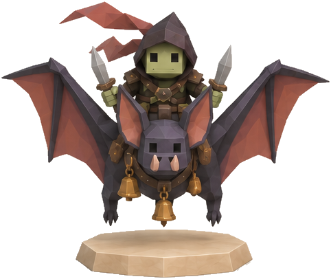
Bat Thieves of Black Firehost_48 · FRONT · 482 × 406
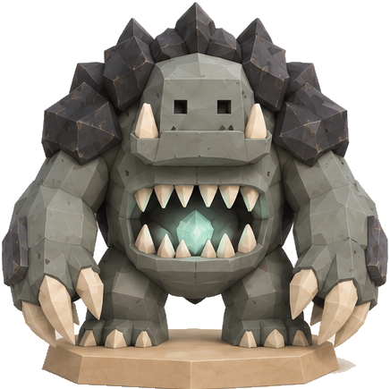
Troll Guardians of the Deep Mawhost_49 · FRONT · 436 × 435
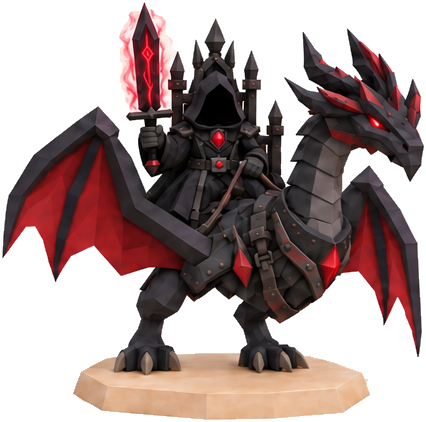
Lord Bernhard, the Black Sorcerer on the Wyvern Queenhost_50 · FRONT · 426 × 422